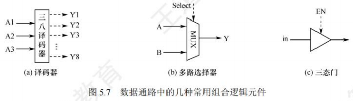
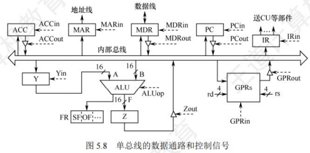

数据通路的功能和基本结构
[toc]
数据通路的功能
-
CPU的内部结构可视为由**数据通路(Data Path)和控制部件(Control Unit)**两大部分组成。
-
数据通路是数据在指令执行过程中所经过的路径，包括路径上的部件。
- ALU、通用寄存器、状态寄存器、异常和中断处理逻辑等都是指令执行时数据流经的部件，都属于数据通路的一部分。
- 数据通路描述了信息从哪里开始，中间经过哪些部件最后被传送到哪里。
- 数据通路由控制部件控制，控制部件根据每条指令功能的不同，生成对数据通路的控制信号。
数据通路的组成
组成数据通路的元件主要分为组合逻辑元件和时序逻辑元件两类。
组合逻辑元件(操作元件)
-
任何时刻产生的输出仅取决于当前的输入。组合电路不含存储信号的记忆单元，也不受时钟信号的控制，输出与输入之间无反馈通路，信号是单向传输的。
-
数据通路中常用的组合逻辑元件有加法器、算术逻辑单元(ALU)、译码器、多路选择器、三态门等，如图5.7所示。

图中虚线表示控制信号
- 译码器可用于操作码或地址码译码，n位输入对应种不同组合，因此有个不同输出。
- 多路选择器(MUX)需要控制信号Select来确定选择哪个输入被输出。
- 三态门可视为一种控制开关，由控制信号EN决定信号线的通断
- 当时，三态门被打开，输出信号等于输入信号
- 当时，输出端呈高阻态(隔断态)，所连寄存器与总线断开。
时序逻辑元件(状态元件)
-
任何时刻的输出不仅与该时刻的输入有关，还与该时刻以前的输入有关，因而时序电路必然包含存储信号的记忆单元。
-
此外，时序电路必须在时钟节拍下工作。各类寄存器和存储器，如通用寄存器组、程序计数器、状态/移位/暂存/锁存寄存器等，都属于时序逻辑元件。
数据通路的基本结构
CPU内部单总线方式

- 将ALU及所有寄存器都连接到一条内部公共总线上，称为单总线结构的数据通路。
- 这种结构比较简单，但数据传输存在较多的冲突现象，性能较低。此总线在CPU内部，注意不要把它与连接CPU、存储器和外设的系统总线相混淆。
- 图5.8所示为单总线的数据通路和控制信号。
- GPRs为通用寄存器组，
rs、rd分别为所读、写的通用寄存器的编号； - Y和Z为暂存器；
- FR为标志寄存器，用于存放ALU产生的标志信息。
- 带箭头的虚线表示控制信号，字母加"in"表示该部件允许写入，字母加"out"表示该部件允许输出。
MDRin表示内部总线上信息写入MDR，MDRout表示MDR的内容送入内部总线。- 能输出到总线的部件均通过一个三态门与内部总线相连，用于控制该部件与内部总线之间数据通路的连接与断开。
- GPRs为通用寄存器组，
注意：单周期处理器(CPI = 1)不能采用单总线方式，因为单总线将所有寄存器都连接到一条公共总线上，一个时钟内只允许一次操作，无法完成一条指令的所有操作。
CPU内部多总线方式
CPU内部有两条或更多的总线时，构成双总线结构或多总线结构。
将所有寄存器的输入端和输出端都连接到多条公共通路上，相比之下单总线中一个时钟内只允许传送一个数据，因而指令执行效率很低，因此采用多总线方式，同时在多个总线上传送不同的数据，提高效率。
专用数据通路方式
根据指令执行过程中的数据和地址的流动方向安排连接电路，避免使用共享的总线，性能较高，但硬件量大。
注意：内部总线是指同一部件，如CPU内部连接各寄存器及运算部件之间的总线；系统总线是指同一台计算机系统的各部件，如CPU、内存和各类I/O接口间互相连接的总线。
数据通路的操作举例
总线是一组共享的传输信号线，它不能存储信息，任一时刻也只能有一个部件把信息送到总线上。下面以图5.8所示的单总线数据通路为例，介绍一些常见操作的流程及控制信号。
通用寄存器之间传送数据
- 在寄存器和总线之间有两个控制信号：Rin和Rout。
- 当Rin有效时，控制将总线上的信息存到寄存器R中；
- 当Rout有效时，控制将寄存器R的内容送至总线。
- 下面以程序计数器PC为例，将PC的内容送至MAR。实现该操作的流程及控制信号为：
- ``PCout
和MARin`有效，PC内容→MAR，即
- ``PCout
从主存读取数据
从主存中读取的信息可能是数据或指令，现以CPU从主存中取指令为例，说明数据在单总线数据通路中的传送过程。实现该操作的流程及控制信号为：
PCout和MARin有效，现行指令地址→MAR，即。MDRin有效，CU发出读命令，取出指令后PC + 1，即，。MDRout和IRin有效，现行指令→IR，即。
- 第一步，将PC的内容通过内部总线送至MAR，需要1个时钟周期。
- 第二步，CU向主存发出读命令，从MAR所指主存单元读取一个字，并送至MDR；同时PC加1为取下一条指令做准备，需要1个主存周期。
- 第三步，将MDR的内容通过内部总线送至IR，需要1个时钟周期。
将数据写入主存
将寄存器R1的内容写入寄存器R2所指的主存单元，完成该操作的流程及控制信号为：
R1out和MDRin有效，。R2out和MARin有效，。MDRout有效，CU发出写命令，。
执行算术或逻辑运算
-
在单总线数据通路中，每一时刻总线上只有一个数据有效。
- 由于ALU是一个没有存储功能的组合逻辑元件，在其执行运算时必须保持两个输入端同时有效，因此先将一个操作数经内部总线送入暂存器Y保存，Y的内容在ALU的左输入端始终有效，再将另一个操作数经内部总线直接送到ALU的右输入端。
- 此外，ALU的输出端也不能直接与总线相连，否则其输出会通过总线反馈到输入端，影响运算结果，因此将运算结果暂存在暂存器Z中。
-
假设加法指令ADD ACC, R1，实现将ACC的内容和R1的内容相加并写回ACC，完成该操作的流程及控制信号为：
R1out和Yin有效，操作数→Y，即。ACCout和ALUin有效，CU向ALU发出加命令，结果→Z，即。Zout和ACCin有效，结果→ACC，即。
-
以上3步不能同时执行，否则会引起总线冲突，因此该操作需要3个时钟周期。
修改程序计数器的值
-
转移指令通过修改程序计数器PC的值来达到转跳的目的。假设转移指令
JMP addr，addr为目标转移地址，实现将IR中的地址字段写入PC，完成该操作的流程及控制信号为：IRout和PCin有效，。
-
数据通路结构直接影响CPU内各种信息的传送路径，数据通路不同，指令执行过程的微操作序列的安排也不同，它关系着微操作信号形成部件的设计。